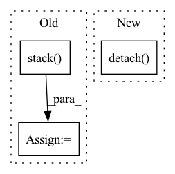

Pattern ID :3875
Before Change
self.anchor_vec = self.anchors / self.stride
self.anchor_wh = self.anchor_vec.view(1,self.num_anchors, 1, 1, 2)
yv, xv = torch.meshgrid([torch.arange(grid_size, device=get_device()), torch.arange(grid_size, device=get_device())])
self.grid = torch.stack( (xv, yv), 2) .view((1, 1, grid_size, grid_size, 2)).float()
self.grid1=meshgrid(grid_size,grid_size,requires_grad=False).view([1, 1, grid_size,grid_size,2])
// Calculate offsets for each grid
After Change
def compute_grid_offsets(self, grid_size):
self.register_buffer("grid", meshgrid(grid_size,grid_size,requires_grad=False).view((1, 1, grid_size, grid_size, 2)).float().detach() )
//self.grid=meshgrid(grid_size,grid_size,requires_grad=False).view((1, 1, grid_size, grid_size, 2)).float().detach()
// Calculate offsets for each gridIn pattern: SUPERPATTERN
Frequency: 3
Non-data size: 3
Instances Fragment ID: 14684786
Project Name: allanyiin/yolov4
Commit Name: 97ce1d2fcabfc23a4e88bdb334cc027b83ed708e
Time: 2020-05-13
Author: allan@asiaminer.com.tw
File Name: pytorch_yolo.py
M Class Name: YoloLayer
N Class Name: YoloLayer
M Method Name: compute_grid_offsets(2)
N Method Name: compute_grid_offsets(2)
M Parent Class: Layer
N Parent Class: Layer
M File Name: pytorch_yolo.py
N File Name: pytorch_yolo.py
M Start Line: 113
M End Line: 118
N Start Line: 118
N End Line: 118
Before Change
distogram, dump_distograms_path / f"dist_model_{i:02}.jpg"
)
averaged_outputs = [
torch.stack( model_output) .mean(axis=0) for model_output in zip(*outputs)
]
return averaged_outputs
After Change
if dump_distograms_path:
dump_distograms_path = Path(dump_distograms_path)
for i, output in enumerate(outputs):
distogram_distribution = output["dist"].cpu().detach() .numpy()
distogram = distogram_distribution_to_distogram(distogram_distribution)
plot_distogram(
distogram, dump_distograms_path / f"dist_model_{i:02}.jpg" Fragment ID: 14684787
Project Name: learn-ventures/trdesign-pytorch
Commit Name: 3781c5aaf6b84c2935adf5a195e8c032e64e0819
Time: 2021-03-17
Author: xandersteenbruggex@gmail.com
File Name: src/tr_Rosetta_model.py
M Class Name: trRosettaEnsemble
N Class Name: trRosettaEnsemble
M Method Name: forward(4)
N Method Name: forward(4)
M Parent Class: nn.Module
N Parent Class: nn.Module
M File Name: src/tr_Rosetta_model.py
N File Name: src/tr_Rosetta_model.py
M Start Line: 251
M End Line: 269
N Start Line: 257
N End Line: 270
Before Change
final_gen_objective += torch.mul(log_probability, missing[:, t].unsqueeze(dim=1) * cum_advantage)
final_gen_objective = -torch.sum(final_gen_objective) / batch_size // max the reward
maintain_averages_op = None
advantages = torch.stack( advantages, dim=1)
// return [
// final_gen_objective, log_probs, rewards, advantages, baselines,
// maintain_averages_op, critic_loss, cumulative_rewardsAfter Change
// will need to operate unidirectionally and it may take in the past context.
// Critic loss calculated from the estimated value function \hat{V}(s)
// versus the true value function V*(s).
cumulative_rewards = cumulative_rewards.detach()
critic_loss = self.create_critic_loss(cumulative_rewards, estimated_values, mask_present)
// Baselines are coming from the critic"s estimated state values.
baselines = estimated_values Fragment ID: 14684788
Project Name: rucaibox/textbox
Commit Name: cc5517ab006f13503389f456551219a634d7ca28
Time: 2020-12-26
Author: 1318829605@qq.com
File Name: textbox/module/Generator/MaskGANGenerator.py
M Class Name: MaskGANGenerator
N Class Name: MaskGANGenerator
M Method Name: calculate_reinforce_objective(5)
N Method Name: calculate_reinforce_objective(5)
M Parent Class: GenerativeAdversarialNet
N Parent Class: GenerativeAdversarialNet
M File Name: textbox/module/Generator/MaskGANGenerator.py
N File Name: textbox/module/Generator/MaskGANGenerator.py
M Start Line: 255
M End Line: 301
N Start Line: 236
N End Line: 290